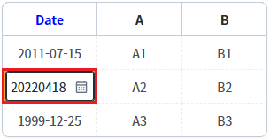
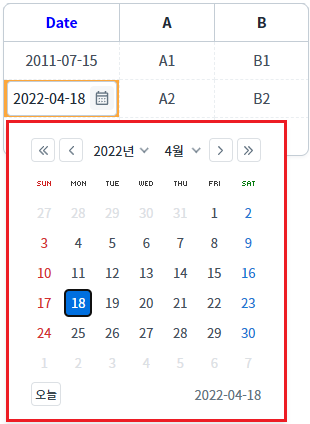
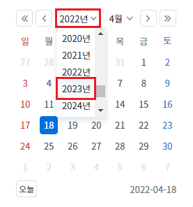
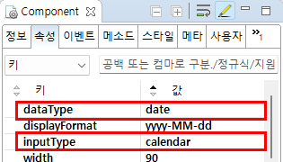
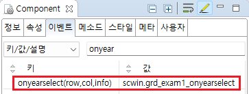

GridView의 'onyearselect' 이벤트를 설정한 예제입니다. 이 이벤트는 컬럼의 inputType이 'calendar'로 설정되고, 사용자가 셀의 편집 모드에서 달력 UI의 '연도'(year)를 선택했을 때 발생합니다.
연도가 출력된 SelectBox에서 값을 선택해야 합니다. (상단 좌우 아이콘을 클릭하여 연도가 변경된 경우는 발생하지 않습니다.)
이벤트 핸들러에서 아래의 값을 확인할 수 있습니다. - 수정되고 있는 셀의 행 번호 - 수정되고 있는 셀의 열 번호 - 선택 전, 선택 후 연도 값이 담긴 JSON
'onyearselect' 이벤트 발생 시 로그 출력하기
1
STEP 1: 'Date' 컬럼의 셀을 편집 모드로 전환합니다.
두 번째 행의 'Date' 컬럼의 셀을 클릭합니다.
셀이 편집 모드로 전환됩니다.
Image 1.브라우저(Chrome) 실행 예시

2
STEP 2: 달력 UI에서 '연도'(year)를 선택합니다.
편집 모드에서 아이콘 '달력'을 클릭합니다. 달력 UI가 표시됩니다.
Image 2.브라우저(Chrome) 실행 예시 - 달력 UI 표시

상단 연도 SelectBox에서 '2023년'을 선택합니다.
Image 3.브라우저(Chrome) 실행 예시 - 연도 선택

3
STEP 3: 실행 결과를 확인합니다.
예제 영역 '로그 확인' 또는 브라우저의 개발자 도구의 콘솔(console)탭에 출력된 로그를 확인합니다.
Example 1.Log
[12:38:40] ** scwin.grd_exam1_ondateselect **
row index : 1
column index : 0
json info : {"oldValue":2022,"newValue":2023}1
GridView 바디 컬럼의 속성을 정의합니다.
[필수] inputType="calendar"
[필수] dataType="date"
[선택] displayFormat="yyyy-MM-dd"
Image 4.웹스퀘어 스튜디오의 Component View - 바디 컬럼 속성 설정 예시

Example 2.Source
<!-- gridView 의 소스 본문 예시 --> <w2:gridView id="grd_exam1"> <!-- 중략 --> <w2:gBody id="gBody1"> <w2:row id="row2"> <w2:column inputType="calendar" dataType="date" id="col_date" displayFormat="yyyy-MM-dd"></w2:column> <!-- 중략 --> </w2:row> </w2:gBody> </w2:gridView>
2
STEP 2: GridView의 'onyearselect' 이벤트 핸들러를 설정합니다.
예제 파일에서는 핸들러로 사용할 메소드명을 'scwin.grd_exam1_onyearselect'로 설정하였습니다.
Image 5.웹스퀘어 스튜디오의 Component View - 이벤트 설정 예시

Example 3.Source
<!-- gridView 의 소스 본문 예시 --> <w2:gridView ev:onyearselect="scwin.grd_exam1_onyearselect" id="grd_exam1"> <!-- 중략 --> </w2:gridView>
3
STEP 3: 'scwin.grd_exam1_onyearselect' 메소드를 정의합니다.
Example 4.Script
//GridView grd_exam1의 onyearselect 이벤트 핸들러 scwin.grd_exam1_onyearselect = function (row, col, jsnInfo) { //row : 수정되고 있는 셀의 행 번호 //col : 수정되고 있는 셀의 열 번호 //jsnInfo : 선택 전, 선택 후 연도 값이 담긴 JSON //console에 log 출력 console.log(row, col, jsnInfo); };
onyearselect
[body column] inputType
[body column] dataType